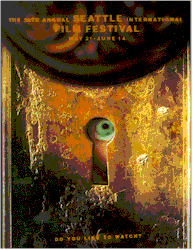
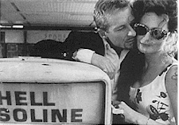

Contents | Features | Reviews | News | Archives | Store

Contents | Features | Reviews | News | Archives | Store
|  | 24th Seattle
International by Lyall Bush |
May 22 5:00 Egyptian
May 23 6:30 Egyptian
Before a young Aussie heads off to the Sydney airport and certain fame as a cowboy singer in Nashville, his dad, a bandy-legged man with a voice full of dogs barking, gives him this out-of-the-blue advice: "Now dan’ bring beck now woman with thin hips to this pawt a the country, boy." It’s a line, like a few others in this unexpected charmer of a movie, that you have to slow down a little to get. See the ragged miles of sad, risible Oedipal terrain gone fallow in it? The young singer, Ralph (Matt Day), has not a jot of interest in his father’s advice, but he’s barely hit the road, hitchhiking to the airport, when a convertible slows to pick him up. That’s his introduction to Patsy (Miranda Ott), scarf over her head and one of those movie woman with juicy, curvy-car finishes, whose hips may or may not be good for birthing. Patsy’s with Boyd (Richard Roxburgh), and together they form glamorous hipster drifters on the lam (not unlike the character Day played in last year’s sexy, scissored up Aussie road movie, Kiss or Kill). And yet it works; it doesn’t hurt either that they pick up Ralph on a dusty back road that looks like a long grassy stretch of a board game about farm life in the 1950’s. In no time, Boyd and Ralph have landed in jail while Patsy scampers off to America. They do time, turning around each other while the movie begins an elaborate cycle of flashing forward from the jail cell when all three reunite in Nashville, bruised and wary. The end is a little disappointing, but getting to Nashville via those long gray roads pointed toward Sydney – that’s what the filmmakers are really asking you to hold up to your mind’s eye.
Contents | Features | Reviews | News | Archives | Store
Copyright © 1999 by Nitrate Productions, Inc. All Rights Reserved.